|
|
НОВОГОДНЯЯ СКАЗОЧКА
|
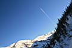 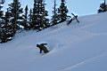 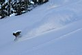 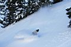 Погода радовала теплом и солнцем. Все было клёво. Даже подъем - неспеша и с удовольствием :) На Трех Березах передовики догнали всех остальных. Итого на 1-е число на Мамае отметились: 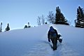 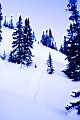 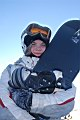 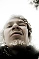 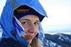 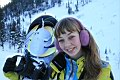 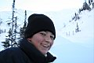 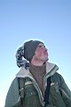 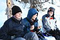 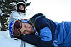 После традиционного трехберезового чаепития компания разделилась по причине наличия у некоторых участников сил и желания идти выше, и по причине отсутствия у некоторых участников опыта катания с крутяков и вообще отсутствия сноуборда, а также по степени общения с Ja :) В итоге на Мамай пошли тропить тройка передовиков, а также Света, Лена, Ксюша и я. До Мамая мы конечно же не дошли, и в этом конечно же виноваты женщины :) Пришлось подыскивать относительно безопасное место на гребне и по очереди катать в Центральный. Первыми укатили и проверили стабильность склонов сами догадайтесь кто :) Однако виноватым во всем фрирайдершам тоже досталось экстрима - подрезанный тропой вышележащий участок склона немного растрескался и подался вниз, чем вызвал, мягко говоря, немалое удивление публики :) 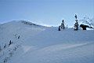 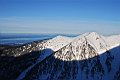 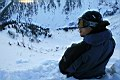 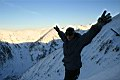 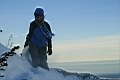 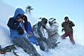 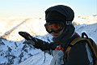 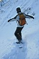 Конечно же кроме сомнительных прелестей бэккантри (тропёжка, свежий ветер, лавиноопастность), есть и явные прелести - катание по целине, свободное и мягкое скольжение! Несколько чудестных минут, всего 5 минут, и все позади, ты внизу и в безопастном месте, а рядом все твои друзья, живее всех живых и такие же довольные, как и ты :) Жизнь снежна! Она может радовать, как радует пухляк, и она же может в любой момент сорваться, как лавина... Потому то и начинаешь просто радоваться жизни, и жить каждый день так, как будто он последний :) Лёха Слюдянский |
Вот так и было все еще целых 4 дня:))) 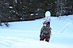
Сказка на ночь - это ж надо было так отметить Новый год, чтобы 1
января затропить на Мамай :)))
До трех берез все было троплено, гуут :) Еще кой-какое солнце было,
потом на 3 березах мнения разделились - мне было в лом идти дальше,
но Союзник уговаривал - ну давай дойдем чуть выше зоны леса, ну лан
пошли. Дошли до места, откуда мы с paparatci , necrogene , boorhan и
еще с народом скатывали в прошлом году на 23 февраля (но не с Мамая,
а с гребня в Центральный).
Он: "Ну давай народ догоним, ту всего-то метров 300 :)"
Я: "Лан, черт с тобой, пошли, но выше будет круто, учти."
И мы пошли, мне чес слово, было лениво идти. Да и запас энергии после
завтрака, который состоял из пары персиков из компота, оставлял желать
лучшего. А народ все как-то не догонялся, чертовы турбозайцы! :)
Поднялся ветер, почти сбивает с ног, небо затянулось немного ветряной
нитью облаков, закатное солнце. Спрашиваю: "Вы что на Мамай собрались?"
А в ответ: "ну а че тут идти-то осталось? :)"
Минут через 5 смотрю - разум взял верх и они решили не идти на вершину,
не дошли совсем немного, свернули в Центральный, в попытках укрыться
от ветра. Догоняю, с силой удерживая рюкзак, отстегиваю красотку Эльдо.
Нас 7 челов. Трое первых уехали. Треск, до боли знакомый и опасный.
Ксюха встегивается и шустро уезжает, хотя сама говорила, что боится.
Сверху посыпались комки снега. Йопть, а вторая нога не пристегнута!
Света уже всегнута и укатывает. Быстро встегиваемся и Леха успевает
крикнуть, чтобы я не ехала вправо, куда укатили все 5 участников, едем
по левой ненагруженной стороне. Лан, отпускаю красотку в плавание, и
сразу вылетаю на задутый фирнованный участок, тяжко, круто, перекантоваться
страшно - доск мягкий для такого снега. Лан, была-не была, н_е_ч_а_с_т_о,
в 3 дуги пролетаю это место, дальше - все нормуль, уклон приближается
к 35-40, все знакомо, летим, балдеем, снег, который сорвался, в итоге
спустил небольшую соплю, которая все-таки успела закрыть часть следов,
ну да фиг с ней :))) Спуск удался на все 100%.
Выкатываю на подушку, к тропе, народ решает еще раз подниматься на 3
березы, мне - ватно :))), скатываю по левому кулуару и остаюсь этим
весьма довольна. Остальные минут через 30-40 также спускаются, но по
самому правому и уже сразу выкатывают к зимухе. Зачетно!
А в зимухе - уже с утра порешали, что варим мегасолянку :))). Отсутствие
оливок компенсировали кучей видов мяса, которое было с успехом сварено
в ней.
И быстро, и горячо, и вкусно :))) Под вечер к нам пожаловали гости -
Андрюха с Максом и его герлой и восхитительной ароматной чачей :)) Обалдеть
:))) Засиделись допоздна за байками и прибаутками, Андрей сказал, что
кунг теперь они утеплили, правда за минусом освещения - окна теперь
забиты фанерой с утеплителем. Зато тепло и ветер не прорывается :))))
Leen ( leen-ru.livejournal.com )
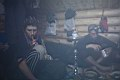 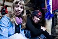 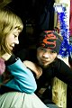 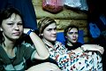 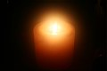
Фото: Лёха, Света и Антон Климов
Вот еще немного добавлю, что когда мы выкатили с Гребня через Центральный прямо на тропу на Подушке, то решили еще покататься и дошли до Трех Берез, откуда очень клево раскатали Крайний кулуар и из него попали прямо в зимуху! Так что я с выбором места нифига не прогадал, очень даже зачетное место :) Лёха Слюдянский |
Январь 2008